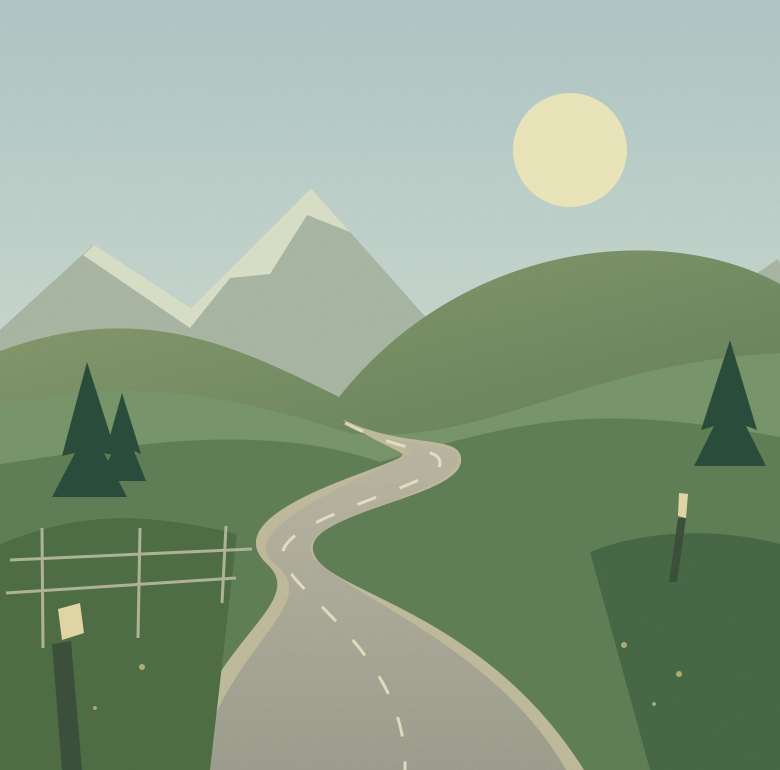

Customise your game
Choose between 1 and 10 rounds, with five as the default, and set a time limit or play without one.
GEOGRAPHY GUESSING FOR CHROME
geoplonk is a Chrome extension that turns exploring Google Maps into a geography guessing game. Use the landscape, road signs and buildings around you to work out where you are, then place your guess on the map.
The current development build is free to play and does not require a geoplonk account.

HOW IT WORKS
Each round starts at a curated Street View location. Explore as much as your chosen rules allow before deciding where you think you are.
Start a singleplayer game and drop into a curated Street View location on the original Google Maps website.
Explore the road, scan the landscape, and collect clues. Want a challenge? Try No Move or lock panning and zooming too.
Place a guess on the map. The closer you get, the more you score—up to 5,000 points a round. Then see where you really were.
Choose between 1 and 10 rounds, with five as the default, and set a time limit or play without one.
Random Explorer takes you somewhere new without a score to chase. Clean View gives the scenery more room.
Your settings, game progress and statistics stay in your browser. No geoplonk account or backend to sign up for.
WHY THIS EXISTS
geoplonk began with the idea of making geography guessing more accessible while giving players more control over their Google Maps experience.
Recognising a language, noticing the shape of a road sign or finding a familiar landscape can turn an unknown location into a solvable puzzle. The aim is to make that experience easy to enjoy, whether you want to improve your geography knowledge or simply explore somewhere new.
Building geoplonk as an extension keeps exploration on the original Google Maps website while adding interface customisation, movement restrictions and an optional guessing game. Those controls also make the extension useful when you want to explore without playing.
The project is currently focused on singleplayer. Its modular design leaves room for future features, including multiplayer, while feedback on the current build helps improve the experience.
Download the current source codeDOWNLOAD AND INSTALL
The current build installs manually in Chrome. Download the ZIP and follow the instructions below.
Free, unlimited singleplayer and Google Maps interface controls.
Install manually using Chrome’s Developer mode. This build is experimental and may need updates as Google Maps changes.
Download the extension ZIP above and extract it. Keep the geoplonk folder somewhere you won’t delete it.
Open chrome://extensions, enable Developer mode, then choose Load unpacked and select the extracted geoplonk folder.
Return to the Play page in Chrome to choose your rules and start a game. You can also open Guess Mode from Chrome’s Extensions menu.
An internet connection is required. Google Maps runs on its own website and receives your normal Maps browsing requests.
The current development build is free to download and play, with no gameplay limits. Funding options for future development are still being considered.
This development build is singleplayer. Multiplayer is a possible future step, but it isn’t available yet.
Settings, active game progress and personal statistics are stored locally in Chrome. The extension has no accounts or analytics. Maps and the guessing map make network requests to Google.
For an update, replace the files in the same geoplonk folder with the new download, then click Reload on its card at chrome://extensions. To uninstall, choose Remove on that card. Local extension data is removed with the extension.